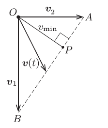

east_beast31 dic 2020, 13:36
Un corpo in acqua è soggetto ad una forza viscosa \(\vec F=-\gamma \vec v\).
Se il corpo è lasciato cadere da fermo, raggiungerà una velocità limite \(v_1\) e continuerà ad affondare con questa velocità.
Supponiamo che al corpo venga impressa una velocità iniziale orizzontale \(v_2\). Qual è la velocità minima del corpo, nel suo moto?
lorenzo.arienti.gdg31 dic 2020, 20:49
Iniziamo col trovare le componenti x e y della velocità in funzione del tempo.
Componete y:
\(ma_y=mg- \gamma v_y\)
\(m\frac{dv_y}{dt}=mg- \gamma v_y\)
Risolvento si trova \(v_y(t)=\frac{mg}{\gamma}(1-e^{\frac{-\gamma t}{m}})\)
Componente x:
\(ma_x=-\gamma v_x\)
\(m\frac{dv_x}{dt}=-\gamma v_x\)
Risolvendo troviamo \(v_x(t)=v_2e^{\frac{-\gamma t}{m}}\)
\(v(t)^2=v_x(t)^2+v_y(t)^2\)
Svolgendo i calcoli e usando \(v_1=\frac{mg}{\gamma}\) si arriva a \(v(t)^2=(v^2_1+v^2_2)e^{\frac{-2 \gamma t}{m}} -v^2_1e^{\frac{-\gamma t}{m}} + v^2_1\)
Possiamo trovare il minimo di \(v(t)^2\) impostando la sua derivata a \(0\) sapendo che coinciderà con il minimo della funzione \(v(t)\)
\(\frac{dv(t)^2}{dt}=e^{\frac{- \gamma t}{m}}(-e^{\frac{- \gamma t}{m}}(\frac{2 \gamma v^2_2}{m}+\frac{2mg^2}{\gamma})+\frac{2mg^2}{\gamma})=0\)
Trovo le due soluzioni \(e^{\frac{-\gamma t}{m}}=0\) e \(e^{\frac{-\gamma t}{m}}=\frac{m^2g^2}{m^2g^2+2 \gamma^2 v^2_2}\)
E' la seconda soluzione quella che ci interessa:
\(e^{\frac{-\gamma t}{m}}=\frac{m^2g^2}{m^2g^2+2 \gamma^2 v^2_2}\)
\(-\frac{\gamma t}{m}=ln(m^2g^2)-ln(m^2g^2+ 2\gamma^2 v^2_2)=ln(m^2g^2)-(ln(m^2g^2)+ln(1+\frac{\gamma^2 v^2_2}{m^2g^2}))\)
\(t=\frac{m}{\gamma}ln(1+\frac{\gamma^2v^2_2}{m^2g^2})\)
Sostituiamo questo risultato nella funzione \(v(t)^2\) per trovare la soluzione \(v(t)^2=\frac{v^2_1v^2_2}{v^2_1+v^2_2}\) e quindi \(v(t)=\frac{v_1v_2}{\sqrt{v^2_1+v^2_2}}\)
east_beast31 dic 2020, 22:17
Tutto giusto, bravo.
Tuo il testimone :D
Gamow0021 gen 2021, 18:01
Questo problema ha anche un'altra elegantissima soluzione che mi sembra doveroso condividere. Il problema è tratto da " 200 more puzzling physics problems", numero 19.
L'equazione del moto del corpo è
\(m\frac{\text{d}\overrightarrow{v}}{\text{d}t} = -\gamma \cdot\overrightarrow{v} + m\overrightarrow{g}\)
Siccome la velocità limite è \(\overrightarrow{v_1} = \frac{m}{k}\overrightarrow{g}\), l'equazione del moto diventa
\(v_1\frac{\text{d}\overrightarrow{v}(t)}{\text{d}t}= g\overrightarrow{v_1} - g\overrightarrow{v}(t)\)
Definendo \(\overrightarrow{u(t)} = \overrightarrow{v(t)} - \overrightarrow{v_1}\), ottengo
\(\frac{\text{d}\overrightarrow{u}(t)}{\text{d}t} = -\frac{g}{v_1}\overrightarrow{u}\)
Ovvero la derivata di \(\overrightarrow{u}\) è parallela al vettore, che quindi non cambia mai direzione. Questa direzione è quella iniziale, ovvero \(\overrightarrow{u}(0)=\overrightarrow{v_2} - \overrightarrow{v_1}\). La velocità del corpo è quindi \(\overrightarrow{v_2} + \overrightarrow{u}\cdot \lambda(t)\), dove \(\lambda(t)\) è una funzione scalare. Significa che la testa del vettore \(\overrightarrow{v}\) si muove sulla linea \(AB\) in figura.

Come si può ben immaginare, \(\overrightarrow{v}\) è minimo quando coincide con \(OP\)